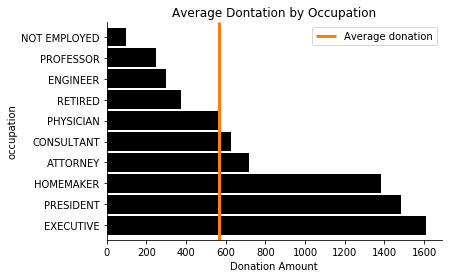
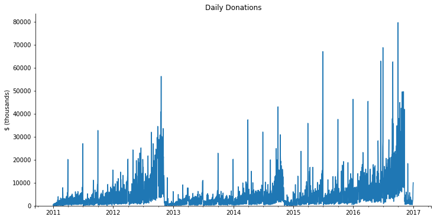
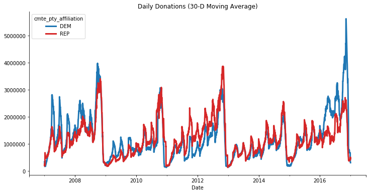

This is part 1 in my series on writing modern idiomatic pandas.
As I sit down to write this, the third-most popular pandas question on StackOverflow covers how to use pandas for large datasets. This is in tension with the fact that a pandas DataFrame is an in memory container. You can't have a DataFrame larger than your machine's RAM. In practice, your available RAM should be several times the size of your dataset, as you or pandas will have to make intermediate copies as part of the analysis.
Historically, pandas users have scaled to larger datasets by switching away from pandas or using iteration. Both of these are perfectly valid approaches, but changing your workflow in response to scaling data is unfortunate. I use pandas because it's a pleasant experience, and I would like that experience to scale to larger datasets. That's what Dask, a parallel computing library, enables. We'll discuss Dask in detail later. But first, let's work through scaling a simple analysis to a larger than memory dataset.
Our task is to find the 100 most-common occupations reported in the FEC's individual contributions dataest. The files are split by election cycle (2007-2008, 2009-2010, ...). You can find some scripts for downloading the data in this repository. My laptop can read in each cycle's file individually, but the full dataset is too large to read in at once. Let's read in just 2010's file, and do the "small data" version.
from pathlib import Path
import pandas as pd
import seaborn as sns
df = pd.read_parquet("data/indiv-10.parq", columns=['occupation'], engine='pyarrow')
most_common = df.occupation.value_counts().nlargest(100)
most_common
RETIRED 279775
ATTORNEY 166768
PRESIDENT 81336
PHYSICIAN 73015
HOMEMAKER 66057
...
C.E.O. 1945
EMERGENCY PHYSICIAN 1944
BUSINESS EXECUTIVE 1924
BUSINESS REPRESENTATIVE 1879
GOVERNMENT AFFAIRS 1867
Name: occupation, Length: 100, dtype: int64
After reading in the file, our actual analysis is a simple 1-liner using two operations built into pandas. Truly, the best of all possible worlds.
Next, we'll do the analysis for the entire dataset, which is larger than memory, in two ways. First we'll use just pandas and iteration. Then we'll use Dask.
Using Iteration
To do this with just pandas we have to rewrite our code, taking care to never have too much data in RAM at once. We will
- Create a global
total_countsSeries that contains the counts from all of the files processed so far - Read in a file
- Compute a temporary variable
countswith the counts for just this file - Add that temporary
countsinto the globaltotal_counts - Select the 100 largest with
.nlargest
This works since the total_counts Series is relatively small, and each year's data fits in RAM individually. Our peak memory usage should be the size of the largest individual cycle (2015-2016) plus the size of total_counts (which we can essentially ignore).
files = sorted(Path("data/").glob("indiv-*.parq"))
total_counts = pd.Series()
for year in files:
df = pd.read_parquet(year, columns=['occupation'],
engine="pyarrow")
counts = df.occupation.value_counts()
total_counts = total_counts.add(counts, fill_value=0)
total_counts = total_counts.nlargest(100).sort_values(ascending=False)
RETIRED 4769520
NOT EMPLOYED 2656988
ATTORNEY 1340434
PHYSICIAN 659082
HOMEMAKER 494187
...
CHIEF EXECUTIVE OFFICER 26551
SURGEON 25521
EDITOR 25457
OPERATOR 25151
ORTHOPAEDIC SURGEON 24384
Name: occupation, Length: 100, dtype: int64
While this works, our small one-liner has ballooned in size (and complexity; should you really have to know about Series.add's fill_value parameter for this simple analysis?). If only there was a better way...
Using Dask
With Dask, we essentially recover our original code. We'll change our import to use dask.dataframe.read_parquet, which returns a Dask DataFrame.
import dask.dataframe as dd
df = dd.read_parquet("data/indiv-*.parquet", engine='pyarrow', columns=['occupation'])
most_common = df.occupation.value_counts().nlargest(100)
most_common.compute().sort_values(ascending=False)
RETIRED 4769520
NOT EMPLOYED 2656988
ATTORNEY 1340434
PHYSICIAN 659082
HOMEMAKER 494187
...
CHIEF EXECUTIVE OFFICER 26551
SURGEON 25521
EDITOR 25457
OPERATOR 25151
ORTHOPAEDIC SURGEON 24384
Name: occupation, Length: 100, dtype: int64
There are a couple differences from the original pandas version, which we'll discuss next, but overall I hope you agree that the Dask version is nicer than the version using iteration.
Dask
Now that we've seen dask.dataframe in action, let's step back and discuss Dask a bit. Dask is an open-source project that natively parallizes Python. I'm a happy user of and contributor to Dask.
At a high-level, Dask provides familiar APIs for large N-dimensional arrays, large DataFrames, and familiar ways to parallelize custom algorithms.
At a low-level, each of these is built on high-performance task scheduling that executes operations in parallel. The low-level details aren't too important; all we care about is that
- Dask works with task graphs (tasks: functions to call on data, and graphs: the relationships between tasks).
- This is a flexible and performant way to parallelize many different kinds of problems.
To understand point 1, let's examine the difference between a Dask DataFrame and a pandas DataFrame. When we read in df with dd.read_parquet, we received a Dask DataFrame.
df
| occupation | |
|---|---|
| npartitions=35 | |
| object | |
| ... | |
| ... | ... |
| ... | |
| ... |
A Dask DataFrame consists of many pandas DataFrames arranged by the index. Dask is really just coordinating these pandas DataFrames.

All the actual computation (reading from disk, computing the value counts, etc.) eventually use pandas internally. If I do df.occupation.str.len, Dask will coordinate calling pandas.Series.str.len on each of the pandas DataFrames.
Those reading carefully will notice a problem with the statement "A Dask DataFrame consists of many pandas DataFrames". Our initial problem was that we didn't have enough memory for those DataFrames! How can Dask be coordinating DataFrames if there isn't enough memory? This brings us to the second major difference: Dask DataFrames (and arrays) are lazy. Operations on them don't execute and produce the final result immediately. Rather, calling methods on them builds up a task graph.
We can visualize task graphs using graphviz. For the blog, I've trimmed down the example to be a subset of the entire graph.
df.visualize(rankdir='LR')
df (the dask DataFrame consisting of many pandas DataFrames) has a task graph with 5 calls to a parquet reader (one for each file), each of which produces a DataFrame when called.
Calling additional methods on df adds additional tasks to this graph. For example, our most_common Series has three additional calls
- Select the
occupationcolumn (__getitem__) - Perform the value counts
- Select the 100 largest values
most_common = df.occupation.value_counts().nlargest(100)
most_common
Dask Series Structure:
npartitions=1
int64
...
Name: occupation, dtype: int64
Dask Name: series-nlargest-agg, 113 tasks
Which we can visualize.
most_common.visualize(rankdir='LR')
So most_common doesn't hold the actual answer yet. Instead, it holds a recipe for the answer; a list of all the steps to take to get the concrete result. One way to ask for the result is with the compute method.
most_common.compute()
RETIRED 4769520
NOT EMPLOYED 2656988
ATTORNEY 1340434
PHYSICIAN 659082
HOMEMAKER 494187
...
CHIEF EXECUTIVE OFFICER 26551
SURGEON 25521
EDITOR 25457
OPERATOR 25151
ORTHOPAEDIC SURGEON 24384
Name: occupation, Length: 100, dtype: int64
At this point, the task graph is handed to a scheduler, which is responsible for executing a task graph. Schedulers can analyze a task graph and find sections that can run in parallel. (Dask includes several schedulers. See the scheduling documentation for how to choose, though Dask has good defaults.)
So that's a high-level tour of how Dask works:

- Various collections collections like
dask.dataframeanddask.arrayprovide users familiar APIs for working with large datasets. - Computations are represented as a task graph. These graphs could be built by hand, or more commonly built by one of the collections.
- Dask schedulers run task graphs in parallel (potentially distributed across a cluster), reusing libraries like NumPy and pandas to do the computations.
Let's finish off this post by continuing to explore the FEC dataset with Dask. At this point, we'll use the distributed scheduler for it's nice diagnostics.
import dask.dataframe as dd
from dask import compute
from dask.distributed import Client
import seaborn as sns
client = Client(processes=False)
Calling Client without providing a scheduler address will make a local "cluster" of threads or processes on your machine. There are many ways to deploy a Dask cluster onto an actual cluster of machines, though we're particularly fond of Kubernetes. This highlights one of my favorite features of Dask: it scales down to use a handful of threads on a laptop or up to a cluster with thousands of nodes. Dask can comfortably handle medium-sized datasets (dozens of GBs, so larger than RAM) on a laptop. Or it can scale up to very large datasets with a cluster.
individual_cols = ['cmte_id', 'entity_tp', 'employer', 'occupation',
'transaction_dt', 'transaction_amt']
indiv = dd.read_parquet('data/indiv-*.parq',
columns=individual_cols,
engine="pyarrow")
indiv
| cmte_id | entity_tp | employer | occupation | transaction_dt | transaction_amt | |
|---|---|---|---|---|---|---|
| npartitions=5 | ||||||
| object | object | object | object | datetime64[ns] | int64 | |
| ... | ... | ... | ... | ... | ... | |
| ... | ... | ... | ... | ... | ... | ... |
| ... | ... | ... | ... | ... | ... | |
| ... | ... | ... | ... | ... | ... |
We can compute summary statistics like the average mean and standard deviation of the transaction amount:
avg_transaction = indiv.transaction_amt.mean()
We can answer questions like "Which employer's employees donated the most?"
total_by_employee = (
indiv.groupby('employer')
.transaction_amt.sum()
.nlargest(10)
)
Or "what is the average amount donated per occupation?"
avg_by_occupation = (
indiv.groupby("occupation")
.transaction_amt.mean()
.nlargest(10)
)
Since Dask is lazy, we haven't actually computed anything.
total_by_employee
Dask Series Structure:
npartitions=1
int64
...
Name: transaction_amt, dtype: int64
Dask Name: series-nlargest-agg, 13 tasks
avg_transaction, avg_by_occupation and total_by_employee are three separate computations (they have different task graphs), but we know they share some structure: they're all reading in the same data, they might select the same subset of columns, and so on. Dask is able to avoid redundant computation when you use the top-level dask.compute function.
%%time
avg_transaction, by_employee, by_occupation = compute(
avg_transaction, total_by_employee, avg_by_occupation
)
CPU times: user 57.5 s, sys: 14.4 s, total: 1min 11s
Wall time: 54.9 s
avg_transaction
566.0899206077507
by_employee
employer
RETIRED 1019973117
SELF-EMPLOYED 834547641
SELF 537402882
SELF EMPLOYED 447363032
NONE 418011322
HOMEMAKER 355195126
NOT EMPLOYED 345770418
FAHR, LLC 166679844
CANDIDATE 75186830
ADELSON DRUG CLINIC 53358500
Name: transaction_amt, dtype: int64
by_occupation
occupation
CHAIRMAN CEO & FOUNDER 1,023,333.33
PAULSON AND CO., INC. 1,000,000.00
CO-FOUNDING DIRECTOR 875,000.00
CHAIRMAN/CHIEF TECHNOLOGY OFFICER 750,350.00
CO-FOUNDER, DIRECTOR, CHIEF INFORMATIO 675,000.00
CO-FOUNDER, DIRECTOR 550,933.33
MOORE CAPITAL GROUP, LP 500,000.00
PERRY HOMES 500,000.00
OWNER, FOUNDER AND CEO 500,000.00
CHIEF EXECUTIVE OFFICER/PRODUCER 500,000.00
Name: transaction_amt, dtype: float64
Things like filtering work well. Let's find the 10 most common occupations and filter the dataset down to just those.
top_occupations = (
indiv.occupation.value_counts()
.nlargest(10).index
).compute()
top_occupations
Index(['RETIRED', 'NOT EMPLOYED', 'ATTORNEY', 'PHYSICIAN', 'HOMEMAKER',
'PRESIDENT', 'PROFESSOR', 'CONSULTANT', 'EXECUTIVE', 'ENGINEER'],
dtype='object')
We'll filter the raw records down to just the ones from those occupations. Then we'll compute a few summary statistics on the transaction amounts for each group.
donations = (
indiv[indiv.occupation.isin(top_occupations)]
.groupby("occupation")
.transaction_amt
.agg(['count', 'mean', 'sum', 'max'])
)
total_avg, occupation_avg = compute(indiv.transaction_amt.mean(),
donations['mean'])
These are small, concrete results so we can turn to familiar tools like matplotlib to visualize the result.
ax = occupation_avg.sort_values(ascending=False).plot.barh(color='k', width=0.9);
lim = ax.get_ylim()
ax.vlines(total_avg, *lim, color='C1', linewidth=3)
ax.legend(['Average donation'])
ax.set(xlabel="Donation Amount", title="Average Dontation by Occupation")
sns.despine()

Dask inherits all of pandas' great time-series support. We can get the total amount donated per day using a resample.
daily = (
indiv[['transaction_dt', 'transaction_amt']].dropna()
.set_index('transaction_dt')['transaction_amt']
.resample("D")
.sum()
).compute()
daily
1916-01-23 1000
1916-01-24 0
1916-01-25 0
1916-01-26 0
1916-01-27 0
...
2201-05-29 0
2201-05-30 0
2201-05-31 0
2201-06-01 0
2201-06-02 2000
Name: transaction_amt, Length: 104226, dtype: int64
It seems like we have some bad data. This should just be 2007-2016. We'll filter it down to the real subset before plotting.
Notice that the seamless transition from dask.dataframe operations above, to pandas operations below.
subset = daily.loc['2011':'2016']
ax = subset.div(1000).plot(figsize=(12, 6))
ax.set(ylim=0, title="Daily Donations", ylabel="$ (thousands)",)
sns.despine();

Joining
Like pandas, Dask supports joining together multiple datasets.
Individual donations are made to committees. Committees are what make the actual expenditures (buying a TV ad). Some committees are directly tied to a candidate (this are campaign committees). Other committees are tied to a group (like the Republican National Committee). Either may be tied to a party.
Let's read in the committees. The total number of committees is small, so we'll .compute immediately to get a pandas DataFrame (the reads still happen in parallel!).
committee_cols = ['cmte_id', 'cmte_nm', 'cmte_tp', 'cmte_pty_affiliation']
cm = dd.read_parquet("data/cm-*.parq",
columns=committee_cols).compute()
# Some committees change thier name, but the ID stays the same
cm = cm.groupby('cmte_id').last()
cm
| cmte_nm | cmte_tp | cmte_pty_affiliation | |
|---|---|---|---|
| cmte_id | |||
| C00000042 | ILLINOIS TOOL WORKS INC. FOR BETTER GOVERNMENT... | Q | NaN |
| C00000059 | HALLMARK CARDS PAC | Q | UNK |
| C00000422 | AMERICAN MEDICAL ASSOCIATION POLITICAL ACTION ... | Q | NaN |
| C00000489 | D R I V E POLITICAL FUND CHAPTER 886 | N | NaN |
| C00000547 | KANSAS MEDICAL SOCIETY POLITICAL ACTION COMMITTEE | Q | UNK |
| ... | ... | ... | ... |
| C90017237 | ORGANIZE NOW | I | NaN |
| C90017245 | FRANCISCO AGUILAR | I | NaN |
| C90017336 | LUDWIG, EUGENE | I | NaN |
| C99002396 | AMERICAN POLITICAL ACTION COMMITTEE | Q | NaN |
| C99003428 | THIRD DISTRICT REPUBLICAN PARTY | Y | REP |
28612 rows × 3 columns
We'll use dd.merge, which is analogous to pd.merge for joining a Dask DataFrame with a pandas or Dask DataFrame.
indiv = indiv[(indiv.transaction_dt >= pd.Timestamp("2007-01-01")) &
(indiv.transaction_dt <= pd.Timestamp("2018-01-01"))]
df2 = dd.merge(indiv, cm.reset_index(), on='cmte_id')
df2
| cmte_id | entity_tp | employer | occupation | transaction_dt | transaction_amt | cmte_nm | cmte_tp | cmte_pty_affiliation | |
|---|---|---|---|---|---|---|---|---|---|
| npartitions=20 | |||||||||
| object | object | object | object | datetime64[ns] | int64 | object | object | object | |
| ... | ... | ... | ... | ... | ... | ... | ... | ... | |
| ... | ... | ... | ... | ... | ... | ... | ... | ... | ... |
| ... | ... | ... | ... | ... | ... | ... | ... | ... | |
| ... | ... | ... | ... | ... | ... | ... | ... | ... |
Now we can find which party raised more over the course of each election. We'll group by the day and party and sum the transaction amounts.
indiv = indiv.repartition(npartitions=10)
df2 = dd.merge(indiv, cm.reset_index(), on='cmte_id')
df2
| cmte_id | entity_tp | employer | occupation | transaction_dt | transaction_amt | cmte_nm | cmte_tp | cmte_pty_affiliation | |
|---|---|---|---|---|---|---|---|---|---|
| npartitions=10 | |||||||||
| object | object | object | object | datetime64[ns] | int64 | object | object | object | |
| ... | ... | ... | ... | ... | ... | ... | ... | ... | |
| ... | ... | ... | ... | ... | ... | ... | ... | ... | ... |
| ... | ... | ... | ... | ... | ... | ... | ... | ... | |
| ... | ... | ... | ... | ... | ... | ... | ... | ... |
party_donations = (
df2.groupby([df2.transaction_dt, 'cmte_pty_affiliation'])
.transaction_amt.sum()
).compute().sort_index()
We'll filter that down to just Republican and Democrats and plot.
ax = (
party_donations.loc[:, ['REP', 'DEM']]
.unstack("cmte_pty_affiliation").iloc[1:-2]
.rolling('30D').mean().plot(color=['C0', 'C3'], figsize=(12, 6),
linewidth=3)
)
sns.despine()
ax.set(title="Daily Donations (30-D Moving Average)", xlabel="Date");

Try It Out!
So that's a taste of Dask. Next time you hit a scaling problem with pandas (or NumPy, scikit-learn, or your custom code), feel free to
pip install dask[complete]
or
conda install dask
The dask homepage has links to all the relevant documentation, and binder notebooks where you can try out Dask before installing.
As always, reach out to me on Twitter or in the comments if you have anything to share.